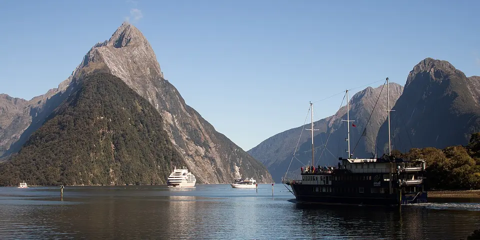

Oceania
New Zealand on a budget
Fjords, volcanoes and Great Walks, best seen by campervan with hostels and cheap Department of Conservation campsites in between.
Photo: Szilas, Public domain, via Wikimedia Commons

Classic route
Auckland, Rotorua, Tongariro, then the South Island: Queenstown, Milford Sound and Wānaka. 3 weeks.
Before you go
Flights to Queenstown: Skyscanner · Kiwi.com · Google Flights
Hostels and guesthouses in Queenstown · Auckland · Rotorua · Tongariro Crossing
Tours and tickets: Queenstown · Auckland
Mobile data: New Zealand eSIM
Travel insurance: SafetyWing
How much 25 places in New Zealand cost
Daily budgets per person in US dollars: a hostel dorm or simple guesthouse, local food, local transport and the usual entry fees.
-
Queenstown
Bungy, jet boats and skiing meet lakeside walks and the gondola ride above Lake Wakatipu, with the Remarkables framing every view.
Bed $35 · Food $22 · Getting around $10 · Extras $15
Budget tip: Hike the Ben Lomond track instead of paying for the gondola; it is free and gives the same sweeping view, and more if you push to the summit.
$82per day -
Auckland
Volcanic cones, harbour ferries and Pacific Island food in the City of Sails, with black-sand surf beaches less than an hour away.
Bed $32 · Food $20 · Getting around $8 · Extras $4
Budget tip: Walk up Mount Eden for a free city view, then take the cheap ferry to Devonport for a coastal stroll and fish and chips.
$64per day -
Rotorua
Bubbling mud pools, spouting geysers and a sulphur smell that hangs over town, plus Māori culture evenings with a hāngī feast.
Bed $28 · Food $20 · Getting around $8 · Extras $20
Budget tip: Kuirau Park has free steaming pools and hot foot baths right in the middle of town, so you can see the geothermal action without a ticket.
$76per day -
Tongariro Crossing
A 19 km volcanic day hike past steaming vents, the Red Crater and the bright Emerald Lakes.
Bed $30 · Food $20 · Getting around $16 · Extras $10
Budget tip: Book the shuttle from National Park village. Start early and pack warm layers, as mountain weather changes fast.
$76per day -
Milford Sound
Waterfalls pour down sheer fjord walls on a boat cruise, at the end of a spectacular mountain drive from Te Anau.
Bed $35 · Food $20 · Getting around $24 · Extras $10
Budget tip: Budget boat cruises leave early or late in the day. Sleep in Te Anau, where beds are cheaper.
$89per day -
Wānaka
A quieter lake town than Queenstown, home to the lone willow standing in the water and the steep Roys Peak hike with its famous ridge view.
Bed $32 · Food $20 · Getting around $10 · Extras $3
Budget tip: Start Roys Peak before dawn. The track is free, but the car park fills fast and the sunrise from the ridge is worth the early alarm.
$65per day -
Napier
Seaside city rebuilt in Art Deco style after the 1931 earthquake, surrounded by Hawke's Bay vineyards and flat cycle trails.
Bed $28 · Food $20 · Getting around $5 · Extras $3
Budget tip: Follow the free self-guided Art Deco walk, then hire a bike for the Hawke's Bay trails linking cellar doors.
$56per day -
Christchurch
Garden city rebuilt after the 2011 earthquakes, with the Cardboard Cathedral, street art, Hagley Park and the Port Hills gondola.
Bed $30 · Food $20 · Getting around $5 · Extras $3
Budget tip: Walk the free Botanic Gardens, catch a bus to Sumner beach, and stock up at supermarkets before heading inland to the mountains.
$58per day -
Dunedin
Scottish-flavoured university city with a Victorian railway station, steep Baldwin Street and the Otago Peninsula's albatross colony and penguins.
Bed $28 · Food $20 · Getting around $5 · Extras $5
Budget tip: Rent a car or cycle along the Otago Peninsula to see sea lions on free beaches; guided albatross and penguin tours are the main cost.
$58per day -
Wellington
A compact, windy capital with the Te Papa museum, the red cable car, a strong coffee culture and craft beer bars on Cuba Street.
Bed $32 · Food $20 · Getting around $6 · Extras $2
Budget tip: Te Papa is free, and so is the walk up Mount Victoria for a view over the harbour and city.
$60per day -
Taupō
Lakeside town on New Zealand's largest lake, near the roaring Huka Falls, free hot streams and Māori rock carvings reached by boat.
Bed $28 · Food $20 · Getting around $10 · Extras $5
Budget tip: Soak for free at Spa Thermal Park, where a hot stream meets the river, then walk the riverside trail to Huka Falls.
$63per day -
Punakaiki
West Coast village beside Pancake Rocks, layered limestone stacks where blowholes spout at high tide, near Paparoa National Park trails.
Bed $28 · Food $20 · Getting around $15 · Extras $1
Budget tip: Time your visit for high tide, when the blowholes are most active; the short loop walk is free and well signposted.
$64per day -
Franz Josef Glacier
A glacier sliding down into lush rainforest on the wild West Coast, with hot pools in town for warming up after the walk.
Bed $30 · Food $20 · Getting around $10 · Extras $5
Budget tip: The walk to the glacier viewpoint is free; heli-hikes onto the ice are the expensive option, so decide if it is worth it for you.
$65per day -
Abel Tasman
Golden beaches and turquoise coves along a coastal Great Walk, with sea kayaking and water taxis between bays.
Bed $30 · Food $20 · Getting around $10 · Extras $8
Budget tip: Book Great Walk campsites ahead. Walk one way and catch a water taxi back to save time.
$68per day -
Aoraki / Mount Cook
New Zealand's highest peak towers over the Hooker Valley Track, an easy hike over swing bridges to an iceberg-dotted glacier lake.
Bed $30 · Food $20 · Getting around $16 · Extras $3
Budget tip: Camp at the DOC campground at White Horse Hill and bring all your food from Twizel, since the village has very few shops.
$69per day -
Lake Tekapo
Milky turquoise lake in the Mackenzie Basin with the stone Church of the Good Shepherd, summer lupins and an international dark sky reserve.
Bed $30 · Food $20 · Getting around $15 · Extras $5
Budget tip: Walk up Mount John for free instead of driving the toll road, and bring warm layers for clear, cold stargazing nights.
$70per day -
Bay of Islands
Sheltered bays for kayaking and dolphin spotting, and the Waitangi Treaty Grounds, where the founding document of modern New Zealand was signed.
Bed $30 · Food $20 · Getting around $13 · Extras $10
Budget tip: Base yourself in the Paihia hostels and hop on the cheap passenger ferry to historic Russell for the day.
$73per day -
The Catlins
A wild southern coast of rare yellow-eyed penguins, misty waterfalls like Purakaunui Falls and a petrified forest exposed at low tide.
Bed $28 · Food $20 · Getting around $24 · Extras $2
Budget tip: You need a car to get around. Curio Bay campground is a cheap base for spotting penguins coming ashore at dusk.
$74per day -
Cape Reinga
Northern tip of New Zealand where two oceans meet below a lighthouse, sacred in Māori tradition and close to the giant Te Paki sand dunes.
Bed $28 · Food $20 · Getting around $24 · Extras $2
Budget tip: Driving yourself is cheaper than tours from Paihia, but rental cars are not allowed on the sand of Ninety Mile Beach.
$74per day -
Kaikōura
Snow-capped mountains rise straight from the sea, where sperm whales feed offshore and fur seals laze on the rocks of the peninsula.
Bed $30 · Food $20 · Getting around $10 · Extras $15
Budget tip: The peninsula walkway to the seal colony is free; whale watching costs more, so save it for a calm day. Try the local crayfish from a roadside caravan.
$75per day -
Stewart Island
A remote, rain-soaked island where you can see wild kiwi foraging on the beach and hike the Rakiura Track through native bush.
Bed $35 · Food $22 · Getting around $8 · Extras $10
Budget tip: Take the ferry from Bluff and camp or use the huts along the Rakiura Great Walk; book them in advance through DOC.
$75per day -
Coromandel Peninsula
Walk to the sea arch at Cathedral Cove, then grab a spade and dig your own natural hot pool in the sand at Hot Water Beach.
Bed $30 · Food $20 · Getting around $24 · Extras $3
Budget tip: Check tide times before you go; Hot Water Beach only works two hours either side of low tide. Borrow or rent a spade cheaply nearby.
$77per day -
Routeburn Track
Alpine Great Walk linking Mount Aspiring and Fiordland national parks over two to four days, crossing Harris Saddle above glacial valleys and waterfalls.
Bed $30 · Food $20 · Getting around $25 · Extras $20
Budget tip: Book huts or campsites the day bookings open for the season; trailhead shuttles are costly, so share transfers with other hikers.
$95per day -
Waitomo Caves
Float beneath ceilings of glowing glowworms and go black-water rafting on an inner tube through dark underground rivers.
Bed $30 · Food $20 · Getting around $24 · Extras $40
Budget tip: Skip the paid caves and walk the free Ruakuri Bush Walk after dark with a torch; glowworms light up the banks along the trail.
$114per day -
Hobbiton
Film set of hobbit holes, gardens and the Green Dragon Inn on a working sheep farm near Matamata, used for the Lord of the Rings films.
Bed $28 · Food $20 · Getting around $15 · Extras $70
Budget tip: Tours are pricey and sell out, so book online ahead; drive yourself from Matamata or Rotorua instead of paying for a coach transfer.
$133per day
Know before you go
New Zealand on a budget: the basics
Currency
$1 = 1.78 NZD
New Zealand dollar
| Dollars to NZD | NZD to dollars | ||
|---|---|---|---|
| $1 | 1.78 NZD | 1 NZD | $0.561 |
| $5 | 8.91 NZD | 5 NZD | $2.81 |
| $10 | 17.81 NZD | 10 NZD | $5.61 |
| $20 | 35.63 NZD | 50 NZD | $28.07 |
| $50 | 89.07 NZD | 100 NZD | $56.14 |
| $100 | 178 NZD | 500 NZD | $281 |
A typical day here (about $76) is roughly 140 NZD.
Mid-market rate on 2026-10-05. Cash machines and exchange desks pay a little less.
Getting around
InterCity buses link most towns, and campervan rentals or relocation deals are a popular way to travel the South Island. The Interislander and Bluebridge ferries cross between Wellington and Picton. Uber operates in the larger cities, and Great Walk huts and campsites sell out months ahead for summer.
Where to sleep
Hostels with dorms are found in every tourist town, and Department of Conservation campsites are a cheap option. Book ahead in Queenstown and Wānaka in summer and ski season.
What to eat
- Mince and cheese pie: bakery pie with beef and melted cheese
- Hāngī: Māori feast of meat and vegetables cooked underground
- Hokey pokey ice cream: vanilla ice cream with honeycomb toffee pieces
- Pavlova: meringue dessert topped with cream and fruit
Money
Cards and contactless payments work almost everywhere, and ATMs are easy to find. Tipping isn't expected, and prices are fixed.
Phone data
Prepaid SIMs from One NZ, Spark or 2degrees are easy to buy at the airport without much paperwork, and coverage is good in towns but patchy in the mountains and national parks.
Heads up
Declare all food and outdoor gear on arrival, as biosecurity rules are strict and undeclared items bring instant fines.
New Zealand travel: quick answers
How much does a day in New Zealand cost on a budget?
About $76 a day for one person, from $56 in Napier to $133 in Hobbiton. That covers a hostel dorm or simple guesthouse, local food, local transport and the usual entry fees, so a week runs about $532 before flights.
When is the best time to visit New Zealand?
November to April is the best time, with the most reliable weather for getting around.
What is the cheapest place to visit in New Zealand?
Napier, at about $56 a day. Seaside city rebuilt in Art Deco style after the 1931 earthquake, surrounded by Hawke's Bay vineyards and flat cycle trails.
How long do you need in New Zealand?
Auckland, Rotorua, Tongariro, then the South Island: Queenstown, Milford Sound and Wānaka. 3 weeks.
How much is $1 in New Zealand?
One US dollar is about 1.78 New Zealand dollar (NZD), going by the mid-market rate on 2026-10-05. So $20 is roughly 35.63 NZD, and a typical budget day of $76 comes to about 140 NZD.
How do you get around New Zealand cheaply?
InterCity buses link most towns, and campervan rentals or relocation deals are a popular way to travel the South Island. The Interislander and Bluebridge ferries cross between Wellington and Picton. Uber operates in the larger cities, and Great Walk huts and campsites sell out months ahead for summer.
What food should you try in New Zealand?
Mince and cheese pie, bakery pie with beef and melted cheese. Hāngī, Māori feast of meat and vegetables cooked underground. Hokey pokey ice cream, vanilla ice cream with honeycomb toffee pieces. Pavlova, meringue dessert topped with cream and fruit.
Planning around the seasons? See where to go in November, or compare the cheapest countries nearby.
Itineraries through New Zealand
- New Zealand by Bus 20 days · $3,283